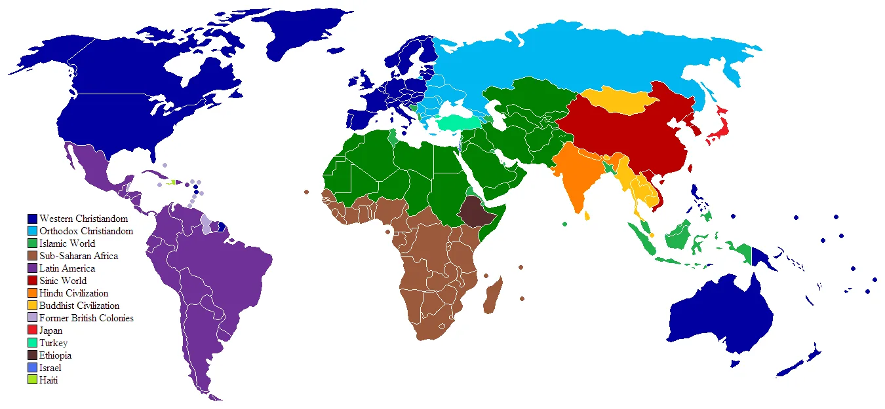

Den Koran in der verständlichen Sprache lesen und abschließende Worte
In den bisherigen Abschnitten unseres Buches haben wir dargelegt, dass es notwendig ist, die Quelle des Islam klar zu definieren, um den wahren Islam zu erkennen. Ausgehend von diesem Ansatz haben wir durch Bezugnahme auf den Koran selbst bewiesen, dass die einzige Quelle des Islam der Koran ist. Um Missverständnisse zu vermeiden, haben wir betont, dass dieser Ansatz keine Reformbewegung darstellt, sondern eine Bemühung, die Hinzufügungen zum Islam zu beseitigen und den Geboten des Korans zu folgen. Anschließend haben wir festgestellt, dass die Zusätze zum Islam insbesondere durch Hadithe erfolgt sind, und wir haben aufgezeigt, dass viele unter dem Titel „Hadith“ überlieferte Aussagen voller Verleumdungen gegen den Propheten Muhammad sind und aus vielen Gründen nicht als Quelle des Islam dienen können. Danach haben wir nachgewiesen, dass Hadithe sowohl mit dem Koran als auch untereinander sowie mit der Vernunft in Widerspruch stehen, und dass sie durch ihre Hinzufügungen zur Religion den Koran als alleinige Quelle des Islam infrage stellen. Dadurch konnten wir die Überzeugung stärken, dass ausschließlich der Koran die Grundlage des Islam bildet. Zur weiteren Untermauerung dieses Ansatzes haben wir untersucht, warum Hadithe erfunden wurden, warum die ersten vier Kalifen keine Hadithe niederschreiben ließen und wer die wichtigsten Hadith-Fälscher waren. Wir haben die historische Entwicklung der Verfälschung des Islam aufgezeigt und dargelegt, wie der Koran den wahren Islam beschreibt und wie der verfälschte Islam davon abweicht. Es wurde deutlich, dass die meisten Hinzufügungen zum Islam dadurch entstanden sind, dass persönliche Meinungen zu Themen, die im Koran nicht behandelt werden, zur islamischen Vorschrift erhoben wurden. Diesen Fehler haben wir im gesamten Buch ausführlich mit zahlreichen Beispielen illustriert und in einem eigenen Kapitel besonders hervorgehoben.
Nach der Untersuchung all dieser zentralen Themen sind wir nun am Ende unseres Buches angelangt. Aufgrund der Bedeutung des Verständnisses des Korans möchten wir abschließend nochmals betonen, wie wichtig es ist, den Koran in einer Sprache zu lesen, die man versteht.
In unserem anderen Buch The Quran: Unchallengeable Miracle579 haben wir versucht, die Wunderhaftigkeit und Vertrauenswürdigkeit des Korans darzulegen. Ebenso wichtig wie die Aufdeckung des falschen Islam ist es, den Wert des Korans als einzige Quelle des Islam zu erkennen und Vertrauen in ihn zu stärken. Nur so können Menschen den verfälschten Islam zurückweisen und sich entschlossen dem Koran zuwenden.
Den Koran in der verständlichen Sprache lesen
Um den Islam gemäß den Lehren des Korans zu leben, ist es eine der grundlegendsten Maßnahmen, den Koran in die Sprache der Gemeinschaft zu übersetzen, die ihn praktizieren soll. Der Koran wurde auf Arabisch offenbart, und sein Original ist in dieser Sprache verfasst. Doch gemäß dem Koran ist Arabisch keine heilige Sprache. Der Koran erwähnt, dass an jedes Volk ein Prophet gesandt wurde, der den Menschen in ihrer eigenen Sprache Botschaften überbrachte. So ist die Tora in der Sprache des Volkes von Mose, das Evangelium in der Sprache des Volkes von Jesus, und auch die Offenbarungen von Lot und Noah wurden in deren jeweiligen Sprachen übermittelt. Was diese Botschaften heilig macht, ist die Tatsache, dass sie von Gott offenbart wurden, nicht die Sprache selbst – und keine dieser Botschaften war auf Arabisch. Gottes Botschaft kann ebenso auf Arabisch geschrieben werden, wie auch blasphemische Äußerungen oder Loblieder auf Götzen in dieser Sprache verfasst werden können. Doch bestimmte traditionalistische Denkweisen, die Arabisch als Gottes eigene Sprache und die arabischen Schriftzeichen als Gottes spezielle Buchstaben verherrlichen, haben Menschen daran gehindert, den Koran zu verstehen, indem sie ihn von denen fernhielten, die kein Arabisch sprechen. Im Vers 41:44 Vers wird erklärt, dass der Koran deshalb auf Arabisch offenbart wurde, weil er zunächst an die arabische Gemeinschaft gerichtet war. Die Offenbarung erfolgte in Übereinstimmung mit Gottes Gewohnheit, seine Propheten in der Sprache des jeweiligen Volkes sprechen zu lassen. So wie es unsinnig wäre, Arabern ihre Religion in einer fremden Sprache zu übermitteln, wäre es genauso unsinnig, Deutschen die Religion in einer ihnen unverständlichen Sprache zu vermitteln. Für die deutsche Gemeinschaft ist dies nur durch eine Übersetzung des Korans in ihre eigene Sprache möglich. Erfreulicherweise hat der Widerstand gegen das Lesen von Koranübersetzungen, der einst aus traditionellen Kreisen kam, in unserer Zeit erheblich nachgelassen. Doch wir dürfen nicht vergessen, dass viele Menschen in der Vergangenheit durch solche traditionalistischen Einstellungen daran gehindert wurden, Übersetzungen des Korans zu lesen. Stattdessen wurden sie auf theologische Handbücher und ähnliche Werke beschränkt.
Die Wörter und Begriffe im Koran wurden schon vor seiner Offenbarung von den Arabern verwendet. Begriffe wie „Allah“, „Schwein“, „Erbe“ oder „Testament“ waren bereits bekannt und in Gebrauch. Der Koran verwendet bestehende Wörter und Begriffe, um seine Botschaften zu übermitteln. Wer den Koran liest, erkennt diese offensichtliche Wahrheit leicht. Was heilig ist, sind nicht die arabischen Wörter oder Buchstaben, sondern die göttlichen Offenbarungen, die mit diesen Mitteln übermittelt werden.
Das Sakralisieren der arabischen Sprache und das Beharren darauf, den Glauben ohne Verständnis zu praktizieren, haben oft zu absurden Situationen geführt. Ein anschauliches Beispiel erzählt die folgende Anekdote:
„Arabische Beduinenfrauen sangen mit durchdringenden Stimmen Lieder, begleitet von Tamburinen. Die Themen ihrer Gesänge waren die Köstlichkeiten von Kamelfleisch – ob gegrillt, gekocht oder gebraten. Unterdessen standen Soldaten der Osmanischen Truppen, die in soldatischer Grundstellung das Spektakel verfolgten. Einige der kräftigen jungen Männer der Osmancık-Kompanie weinten vor Rührung, während sie der angeblichen Rezitation lauschten. Eşref Sencer Kuşçubaşı, der Kommandant, der die Szene beobachtete und die Bedeutung der arabischen Worte verstand, war erstaunt. Er fragte einen der Soldaten:
Gott ist der Schöpfer aller Sprachen und Völker
Um zu verstehen, wie wir verschiedene Sprachen und Völker bewerten sollten, werfen wir einen Blick auf die erhellenden Verse des Korans:

Aus diesen Versen erkennen wir, dass alle Sprachen – ob Arabisch, Deutsch, Englisch, Irisch, Französisch, Türkisch, Russisch oder Chinesisch – respektvoll sind. Die Menschen sollten nicht versuchen, diese Vielfalt zu zerstören, sondern sie sollten versuchen, sich innerhalb dieser Unterschiede zu mischen und kennenzulernen. Jede Sprache hat ihre eigene Schönheit, und keine Sprache hat eine besondere Heiligkeit. Wer diese Vielfalt durch angeblich „heilige“ Etiketten beseitigt, widerspricht Gottes Buch, dem Koran.
Als Gott den Engeln Adams Überlegenheit erklärte, betonte Er, dass Adam die Fähigkeit zur Benennung von Dingen besaß. Diese Fähigkeit, durch Sprache Dinge zu benennen und zu definieren, ist eine grundlegende Funktion der Sprache und ein Merkmal menschlicher Überlegenheit. Ein bewusster Umgang mit Sprache ist daher entscheidend für die Nutzung des Verstandes. Der Einsatz des Verstandes, basierend auf sprachlicher Benennung und Reflexion, ist eine der unterscheidenden Eigenschaften des Menschen.
Prof. Dr. Beyza Bilgin betont ebenfalls die Bedeutung, den Koran in einer Sprache zu lesen, die die Menschen verstehen können:
„Das Verständnis des Korans ist essenziell, und die Verkündigung und Wegweisung durch Offenbarungen erfolgten immer in der Sprache der jeweiligen Völker. Daher sollten die Menschen den Koran nicht in einer fremden Sprache, sondern in ihrer eigenen Sprache lesen, um ihn zu verstehen, von seinen Lehren und Ratschlägen zu profitieren und dadurch ihr Verhalten zu entwickeln. Solange ein solches Lesen nicht ermöglicht wird und der Koran in den Händen einer kleinen Gruppe bleibt, bleiben die umfassenden Entwicklungen, die durch die göttliche Zielsetzung und den inhaltlichen Reichtum des Korans ausgelöst werden könnten, ungenutzt. In der Zeit der Offenbarung war die arabische Sprache ein zentraler Bestandteil des kulturellen Lebens der Araber. Der Koran verband die Schönheit der arabisch-literarischen Tradition mit neuartigen Themen. Doch damals, wie auch heute, versuchten manche, die Kraft des Korans zu unterdrücken, indem sie ihn auf musikalischen Klang reduzierten:
Diese Feinde des Korans verstanden, dass sie seiner Botschaft nicht standhalten konnten, wenn er gehört und verstanden würde. Doch die heute verbreitete Tradition, den Koran in musikalischer Form zu rezitieren, lässt oft den Inhalt und die tiefgründigen Lehren des Korans in den Hintergrund treten. Wenn Menschen den Koran mit Glauben, Liebe und Vertrauen lesen und ihn verstehen, könnten sie von seinen Lehren und Ratschlägen inspiriert werden. Die Wirkung, die der Koran auf gläubige und fähige Menschen haben könnte, wäre enorm. Ein solches Verständnis würde nicht nur die Muslime, sondern die gesamte Menschheit bereichern.“581
Die Stellung des Korans in der Vergangenheit
Gott fordert im Koran zum Nachdenken, zur Reflexion, zur Forschung und zur Befolgung Seiner Gebote auf. Wie können Menschen ohne das Verständnis der Bedeutung von Gottes Buch überhaupt darüber nachdenken? Um den Glauben zu praktizieren, müssen Menschen die islamischen Lehren in einer Sprache hören oder lesen, die sie verstehen. Während die traditionellen und konfessionellen Islamisten es akzeptierten, dass ihre eigenen Kleriker, Muftis, Imame, Scheichs oder Lehrbücher die Religion in ihren Heimatsprachen erklärten, widersetzten sie sich der Übersetzung des Korans. Ihr Ziel war es, die Geistlichen zwischen Gott und die Gläubigen zu stellen und die von den Rechtsschulen beeinflussten Erklärungen der Geistlichen kritiklos als „Islam“ darzustellen. Die Übersetzung des Korans ermöglicht es den Menschen, den wahren Islam von den verfälschten Ergänzungen zu unterscheiden. Der Widerstand konfessioneller und traditioneller Gruppen gegen Koranübersetzungen erklärt sich aus ihrer Angst, dass die Religion aus der Kontrolle der Konfessionen entgleitet und ihre Verfälschungen hinterfragt werden.
In der Vergangenheit wurde der Koran nicht nur nicht übersetzt, sondern oft auch nicht einmal in arabischer Schrift gedruckt. Trotz der „Glanzzeit“ unserer Vorfahren582 wurde der Koran den Menschen nicht in einer verständlichen Sprache zugänglich gemacht. Selbst nachdem die Erfindung des Buchdrucks nicht mehr als „Sünde“ galt, hielt man an der Idee fest, dass das Drucken des Korans weiterhin „verboten“ sei.583 Das Ergebnis war, dass der Koran – wenn überhaupt – in bestimmten Haushalten in Tüchern verwahrt und mehr für seinen Klang als für seinen Inhalt rezitiert wurde. Die Menschen konnten sich bei der Lösung von Problemen nicht direkt auf den Koran berufen. Die Scheichs und Imame lehrten die Menschen Religion. Sie waren Teil eines Systems, das Religion mit Sunnitentum gleichsetzte.
Die Behauptung „Der Koran kann nicht übersetzt werden“ ist falsch584. Aussagen wie „Gott ist einer“, „Gott ist Allvergebend“, „Moses wurde das Buch gegeben“ oder „Blut soll man nicht trinken, Schweinefleisch soll man nicht essen“ lassen sich klar übersetzen. Was davon wird nicht verstanden?
Das eigentliche Problem liegt nicht in der Übersetzung, sondern oft in der Interpretation bestimmter Begriffe. Dies betrifft sowohl arabischsprachige Personen als auch Nicht-Araber. Die im Koran beschriebene Tendenz der Juden, die Stellen und Bedeutungen von Wörtern in ihrer Religion zu verändern, ist auch bei uns zu beobachten. Der Hauptschuldige dafür sind die Bemühungen der Mentalität, die versucht, den Islam mit ihren verfälschten Erklärungen zu korrumpieren, um den Koran an ihre eigenen Wünsche anzupassen, indem sie die Bedeutung der Worte des Korans verändern. Dieses Problem, das durch die Untersuchung von Punkten wie der Verwendung desselben Wortes an verschiedenen Stellen im Koran, kurz gesagt, durch eine ganzheitliche Betrachtung des Korans, gelöst werden kann, tritt an einigen außergewöhnlichen Stellen auf und kann durch eine sorgfältige Untersuchung, wie wir sie erwähnt haben, gelöst werden.
Manche „religiöse Aktivisten“ propagieren weiterhin die Nutzlosigkeit der Koranverständnisbemühungen, wie z. B.
Arabisch zu lernen und den Koran in seiner Originalsprache zu lesen, ist zweifellos eine wertvolle Praxis. Doch die Realität ist, dass nur ein kleiner Prozentsatz der Gläubigen die Sprache in ausreichendem Maße erlernen wird. Es ist inakzeptabel, Nicht-Arabischsprachige auf Lehrbücher zu beschränken und sie vom Verständnis des Korans fernzuhalten. Der Koran fordert selbst zum Nachdenken und zum Verständnis auf. Die Bemühung, den Koran zu verstehen, ist daher keine Neuerfindung, sondern die Befolgung von Gottes Geboten. Solange Muslime den Zugang zu den wahren Lehren des Korans haben, wird die Kraft der Wahrheit stärker sein als jede verfälschte Lehre.
Schlussfolgerung
Im gesamten Verlauf dieses Buches haben wir dargelegt, warum Quellen außer dem Koran nicht als Grundlage für den Islam dienen können. Die von uns dargestellte und verteidigte Methode ist sehr klar: den Koran zur Hand nehmen und feststellen, dass das, was außerhalb des Korans als „Islam“ präsentiert wird, nichts mit der wahren Religion zu tun hat. Wir haben wiederholt betont und betonen es erneut: Der Koran ist gleichbedeutend mit dem Islam. Um den Islam zu verstehen und zu leben, brauchen wir weder Hadith- noch Handbücher. Niemand – wer auch immer es sein mag – hat das Recht, dem Islam, also dem Koran, etwas hinzuzufügen oder etwas davon zu entfernen. Unser Ziel ist es, den Islam ihrem alleinigen Besitzer, Gott, zu überlassen. Es ist inakzeptabel, sich an Gottes Einzigartigkeit bei der Festlegung von Gesetzen zu beteiligen oder eigene Meinungen, Traditionen oder persönliche Ansichten in den Islam einzubringen. Gott hat keine Partner, wenn es um die Gesetzgebung geht. Den Koran als einzige Quelle für das Verständnis des Islam zu betrachten, bedeutet in erster Linie, keinen anderen Gesetzgeber außer Gott zu akzeptieren.
Die grundlegende Voraussetzung für das Überwinden der Dunkelheit, die den Islam umhüllt hat, und für die Befreiung der Köpfe der Menschen ist die Anerkennung des Korans als einzige Quelle des islam. Dieses Prinzip, das auch ein Gebot des Korans ist, schützt den Islam sowohl vor religiösem Fanatismus als auch vor opportunistischen Ansichten und persönlichen Interessen, die den Islam verzerren könnten. Der Koran warnt davor, dass Täuscher die Menschen im Namen Gottes und der Religion in die Irre führen können (Koran 35:5; 31:33). Kurz gesagt, wir dürfen nie vergessen, dass wir bei Aussagen, die im Namen Gottes oder des Islam gemacht werden, getäuscht werden könnten. Um nicht in die Irre geführt zu werden, sollten wir alles, was im Namen des Islam gesagt wird, durch den Filter der einzigen Quelle des Islam – des Korans – prüfen. Dieses Prinzip gilt auch für dieses Buch. Nur wenn die Aussagen dieses Buches mit dem Koran übereinstimmen, sind sie wahr. Aufgrund unserer menschlichen Begrenztheit können uns Fehler unterlaufen; unser Anspruch ist die Unfehlbarkeit des Korans, nicht unsere eigene. Daher sollte das Prinzip der Überprüfung durch den Koran auch auf dieses Buch angewendet werden.
Der Koran beschreibt sich selbst als Buch, das die Details liefert, alles erklärt, Barmherzigkeit und Frohbotschaft ist, Licht und Führung, das uns zum Verstehen und Umsetzen herabgesandt wurde. Warum sollten wir, wenn wir ein solches wundersames Buch besitzen, nach anderen religiösen Quellen suchen? Der Koran wird jede seelische Wunde heilen, jede Sorge lindern, unseren Geist erleuchten und uns auf unserem Weg führen. Lassen wir uns allein und ausschließlich vom Koran leiten. Wir dürfen nicht vergessen, dass wir im Jenseits für den Koran verantwortlich gemacht werden, der Gottes Offenbarung ist: